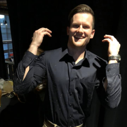

My name is Adara Townsend and I just graduated from highschool last year in 2020. I went into coding right after high school and I have a few friends who do coding in their free time and I want to be able to possibly help them with their coding. I have always played video games since I could first pick up a Playstation controller. The Playstation 2 was my first gaming console I've ever played on and I am always looking forward to learning more about coding and video games.

Ben Hemann
Hi I am Ben Hemann, I just recently graduated from the University of Iowa with a degree in Social Informatics. Before that I spent 6 years as an active duty Marine. My time at the University of Iowa gave me a little taste of programming and so I am trying to expand my knowledge of it.
Daniel Rogahn
My name is Daniel Rogahn, I got an Associate's Degree in Early Childhood Education in 2005 from Kirkwood CCU, but unfortunately cooks and
cashiers are paid better and I've been working for various restaurant and retail chains since leaving the preschool teaching profession in 2008.
I am a single father of a 15 year old son. I first began coding while in 7th grade when my father bought me a TRS-80 from a garage sale that used BASIC as its
operating system and native programming language. For over 20 years coding has been a hobby with which I pick up a language in my spare
time and write a game or two after getting the hang of it and then put back down to pursue the more pressing duties of life. I have some
working knowledge of BASIC, C++, C#, Python3, JavaScript, and HTML/CSS. I also play guitar, bass, keyboard, can use a drum machine,
and have passable knowledge of using music production software to compose and record songs a single track at a time to be a one-man band. I
enjoy online multiplayer roleplaying games when I have the time, which I rarely do anymore. I'm currently enrolled in a coding 'bootcamp'
through DeltaV Code School and am close to finishing 201, having already completed 101 and 102.